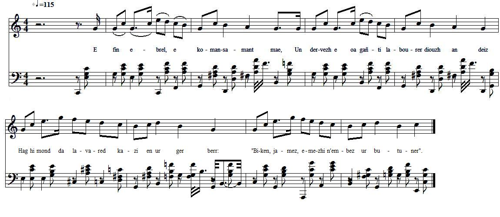

|
AR BUTUNER E fin ebrel, e komansamant mae, Un dervezh e oa gañti labourer diouzh an deiz Hag hi mond da lavared kazi en ur ger berr : Biken, jamez, emezhi nem-bez ur butuner. An den-mañ a oa den a spered. Ne lavar ger e-bed: Nedeo den den em damall, nemed kiriek e ve. Hag en ur pennad goude int en em rankontret Ar plach a houlen outañ e pelech oa chomet. - Da betra, emezañ, ez in dho kweled dho ti Pa nedeoch kontant dam gweled o fumiñ? - Mar am-eus lavaret me a choulen pardon Me zo kontant e fumoch deus-a kreiz va chalon. - Salhokras, plach yaouank, ho trugarekaad Ar gomzoù a lavarit a blij dam daoulagad. Me am-eus archant awalch evit kaout butun. A-drugarez va Doue, ne renkin ket yun. Pa z an-me dar marchajoù gant va marchadourezh, Me zo sur eus va vara ha kig fresk aliez Hag un nebeud dinered da zont ganin dar gêr O chaviñ da implijañ dre mam-bezo afer. Fached va mestrez ouzhin abalamour ma fuman. Mond en nos da choariñ chartoù, ha war an deiz da evañ. Transcription KLT: Chr.Souchon (c) 2009 |
LE FUMEUR Cétait à fin avril, peut-être début mai, Elle avait pris un ouvrier pour la journée. Elle lui déclara de fort mauvaise humeur: « Jamais, au grand jamais, je ne prends de fumeur». Il ne répondit rien et c'était raisonnable. Personne ne saccuse à moins dêtre coupable. Et quelque temps après, ils se sont rencontrés. La fille lui demande où donc il est passé. - A quoi bon, lui dit-il, venir vous déranger, Si vous ne supportez pas de me voir fumer ? - Jen demande pardon, si cest ce que jai dit. Vous fumez ? Mais, jen suis bien aise, Dieu merci! C'est moi qui vous sais gré, jeune dame au coeur tendre, De ces paroles qui font plaisir à entendre. Pour avoir du tabac jai de largent assez, Et, grâce à Dieu, nen suis pas réduit à jeûner. Quand je vais au marché pour vendre mes produits, Le pain mest assuré, souvent la viande aussi. Si je mets de côté quelques deniers parfois, Savoir ce que j'en fais ne regarde que moi : - Soit, chez moi, nuit et jour, enfumer mon amie, Soit être au jeu la nuit, le jour aux beuveries. Trad. Christian Souchon (c) 2009 |
THE SMOKER By the end of April, maybe early in May, She hired a labourer who was paid by the day. Soon she pounced on him and she told him in one go Never did a smoker at work make a good show. He did not breathe a word and proved to be witty. Who does accuse himself unless he is guilty? And a short time later they encountered again. She asked him why he had left her waiting in vain. - What is the use of my visiting you, said he, If smoking is a thing you are not pleased to see. - Did I say so? My remark was out of season. Why should I object to your smoking? No reason! - I'm so glad to hear you say so, my young lady! These words of yours, they please my ears definitely! I've money enough to pay for my tobacco And, thanks be to God, without food I mustnt go. To the markets I go and there I sell my goods, Afford my bread always, fresh meat often I could. When I come home some pence in my purse still abide. And how I employ them is easy to decide: - Either I do annoy sweetheart with my smoking Or I spend my nights playing cards, my days drinking. Transl. Christian Souchon (c) 2009 |
| Alors que le mot "pétun" - emprunté en 1555 au tupi (langue brésilienne), "petyma" - a très vite été supplanté en français par le mot "tabac", originaire d'Haïti (qui désignait à l'origine un tube servant à fumer, puis le cigare), le mot reste en usage en breton sous la forme "butun". | Whereas the word "petun" - borrowed in 1555 from the Tupi (Brazil) "petyma" - was soon supplanted, in French, by the Haitian "tobacco" (referring at first to a tube used for fuming, then to the cigar), the word is still in use in Breton where it appears as "butun". |